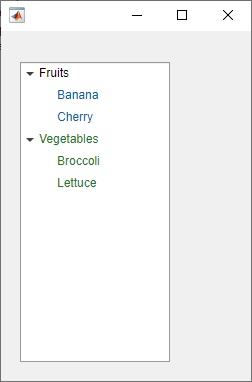
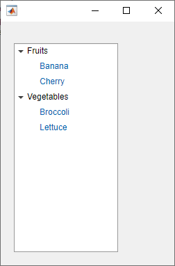

Tree
Tree UI component

Description
A tree UI component displays a list of items in a hierarchy within an app. Use
the Tree object to modify the appearance and behavior of a tree after you
create it.
Creation
Create a tree in an app using the uitree
function.
Properties
Nodes
Selected nodes, specified as a TreeNode object or an array of
TreeNode objects. Use this property to get or set
the selected nodes in a tree.
To allow users to select multiple nodes, set the
Multiselect property to
'on'. MATLAB® always returns SelectedNodes as a column
vector when the tree has multiple selected nodes.
Font and Color
Font color, specified as an RGB triplet, a hexadecimal color code, or one of the options listed in the table.
RGB triplets and hexadecimal color codes are useful for specifying custom colors.
An RGB triplet is a three-element row vector whose elements specify the intensities of the red, green, and blue components of the color. The intensities must be in the range
[0,1]; for example,[0.4 0.6 0.7].A hexadecimal color code is a character vector or a string scalar that starts with a hash symbol (
#) followed by three or six hexadecimal digits, which can range from0toF. The values are not case sensitive. Thus, the color codes"#FF8800","#ff8800","#F80", and"#f80"are equivalent.
Alternatively, you can specify some common colors by name. This table lists the named color options, the equivalent RGB triplets, and hexadecimal color codes.
| Color Name | Short Name | RGB Triplet | Hexadecimal Color Code | Appearance |
|---|---|---|---|---|
"red" | "r" | [1 0 0] | "#FF0000" |
|
"green" | "g" | [0 1 0] | "#00FF00" |
|
"blue" | "b" | [0 0 1] | "#0000FF" |
|
"cyan"
| "c" | [0 1 1] | "#00FFFF" |
|
"magenta" | "m" | [1 0 1] | "#FF00FF" |
|
"yellow" | "y" | [1 1 0] | "#FFFF00" |
|
"black" | "k" | [0 0 0] | "#000000" |
|
"white" | "w" | [1 1 1] | "#FFFFFF" |
|
This table lists the default color palettes for plots in the light and dark themes.
| Palette | Palette Colors |
|---|---|
Before R2025a: Most plots use these colors by default. |
|
|
|
You can get the RGB triplets and hexadecimal color codes for these palettes using the orderedcolors and rgb2hex functions. For example, get the RGB triplets for the "gem" palette and convert them to hexadecimal color codes.
RGB = orderedcolors("gem");
H = rgb2hex(RGB);Before R2023b: Get the RGB triplets using RGB =
get(groot,"FactoryAxesColorOrder").
Before R2024a: Get the hexadecimal color codes using H =
compose("#%02X%02X%02X",round(RGB*255)).
Background color, specified as an RGB triplet, a hexadecimal color code, or one of the color options listed in the table.
RGB triplets and hexadecimal color codes are useful for specifying custom colors.
An RGB triplet is a three-element row vector whose elements specify the intensities of the red, green, and blue components of the color. The intensities must be in the range
[0,1]; for example,[0.4 0.6 0.7].A hexadecimal color code is a character vector or a string scalar that starts with a hash symbol (
#) followed by three or six hexadecimal digits, which can range from0toF. The values are not case sensitive. Thus, the color codes"#FF8800","#ff8800","#F80", and"#f80"are equivalent.
Alternatively, you can specify some common colors by name. This table lists the named color options, the equivalent RGB triplets, and hexadecimal color codes.
| Color Name | Short Name | RGB Triplet | Hexadecimal Color Code | Appearance |
|---|---|---|---|---|
"red" | "r" | [1 0 0] | "#FF0000" |
|
"green" | "g" | [0 1 0] | "#00FF00" |
|
"blue" | "b" | [0 0 1] | "#0000FF" |
|
"cyan"
| "c" | [0 1 1] | "#00FFFF" |
|
"magenta" | "m" | [1 0 1] | "#FF00FF" |
|
"yellow" | "y" | [1 1 0] | "#FFFF00" |
|
"black" | "k" | [0 0 0] | "#000000" |
|
"white" | "w" | [1 1 1] | "#FFFFFF" |
|
This table lists the default color palettes for plots in the light and dark themes.
| Palette | Palette Colors |
|---|---|
Before R2025a: Most plots use these colors by default. |
|
|
|
You can get the RGB triplets and hexadecimal color codes for these palettes using the orderedcolors and rgb2hex functions. For example, get the RGB triplets for the "gem" palette and convert them to hexadecimal color codes.
RGB = orderedcolors("gem");
H = rgb2hex(RGB);Before R2023b: Get the RGB triplets using RGB =
get(groot,"FactoryAxesColorOrder").
Before R2024a: Get the hexadecimal color codes using H =
compose("#%02X%02X%02X",round(RGB*255)).
This property is read-only.
Configuration of added styles created using the uistyle
function, returned as an n-by-3 table array. Each row of the table
array corresponds to a style that is currently applied to the tree. Styles that are
added consecutively are given a style order number of n+1. The
Target and TargetIndex columns specify the
part of the tree that the style was added to. The Style column
specifies the style class name.
Use this property if you want to remove a style from the tree using the removeStyle function.
Example: Remove a Style
First, add two styles to a tree.
fig = uifigure; fig.Position = [100 100 250 350]; t = uitree(fig); n1 = uitreenode(t,'Text','Fruits'); n11 = uitreenode(n1,'Text','Banana'); n12 = uitreenode(n1,'Text','Cherry'); n2 = uitreenode(t,'Text','Vegetables'); n21 = uitreenode(n2,'Text','Broccoli'); n22 = uitreenode(n2,'Text','Lettuce'); expand(t) s1 = uistyle('FontColor',[0 0.4 0.7]); % Blue s2 = uistyle('FontColor',[0.1 0.5 0.1]); % Green addStyle(t,s1,'level',2); addStyle(t,s2,'node',[n2 n21 n22]);

When you query t.StyleConfigurations, MATLAB returns a 2-by-3 table array. The level style was added to the tree
first, so it is style order number 1. The
TargetIndex value for the level style, {[
2]}, indicates that the style was applied to the second level of nodes.
Similarly, the second style was added to three nodes in the tree.
t.StyleConfigurations
ans =
2×3 table
Target TargetIndex Style
______ ______________ _________________________
1 level {[ 2]} 1×1 matlab.ui.style.Style
2 node {1×3 TreeNode} 1×1 matlab.ui.style.StyleRemove the second style that was added to the tree by specifying style order
number 2. The tree component appearance updates to use only the
first style.
removeStyle(t,2)

Interactivity
Multiple node selection, specified as 'off' or 'on', or
as numeric or logical 1 (true) or 0 (false). A value of 'on' is equivalent to true, and 'off' is equivalent to false. Thus, you can use the value of
this property as a logical value. The value is stored as an
on/off logical value of type matlab.lang.OnOffSwitchState.
Set this property to 'on' to allow users to select
multiple nodes simultaneously.
Node text editability, specified as 'off' or 'on',
or as numeric or logical 1 (true) or
0 (false). A value of 'on' is
equivalent to true, and 'off' is equivalent to
false. Thus, you can use the value of this property as a logical value.
The value is stored as an on/off logical value of type matlab.lang.OnOffSwitchState.
Set this property to 'on' to allow the user to edit the node text at
run time. The Enable property must also be set to 'on'
to make the text editable.
Operational state of tree, specified as 'on' or
'off', or as numeric or logical 1
(true) or 0 (false). A value of
'on' is equivalent to true, and
'off' is equivalent to false. Thus, you can use the
value of this property as a logical value. The value is stored as an on/off logical value of
type matlab.lang.OnOffSwitchState.
If you set this property to
'on', the app user can interact with the tree and its nodes.If you set this property to
'off', the component appears dimmed, indicating that the app user cannot interact with it or its nodes, and that it will not trigger a callback.
Set this property to 'off' to make the tree and its nodes appear dim,
indicating that the user cannot interact with the tree or its nodes.
Tooltip, specified as a character vector, cell array of character vectors, string array, or 1-D categorical array. Use this property to display a message when the user hovers the pointer over the component at run time. The tooltip displays even when the component is disabled. To display multiple lines of text, specify a cell array of character vectors or a string array. Each element in the array becomes a separate line of text. If you specify this property as a categorical array, MATLAB uses the values in the array, not the full set of categories.
Context menu, specified as a ContextMenu object created using the uicontextmenu function. Use this property to display a context menu when
you right-click on a component.
Position
Location and size, specified as a four-element vector
of the form [left bottom width height]. This table describes each
element in the vector. All measurements are in pixel units.
| Element | Description |
|---|---|
left | Distance from the inner left edge of the parent container to the left edge of the bounding box that encloses the tree |
bottom | Distance from the inner bottom edge of the parent container to the bottom edge of the bounding box that encloses the tree |
width | Distance between the right and left edges of the bounding box |
height | Distance between the top and bottom edges of the bounding box |
Location and size, specified as a four-element vector of the form, [left
bottom width height]. The values in the vector are relative to the parent
container. All measurements are in pixel units. This property value is identical to
the Position property.
This property is read-only.
Location and size, returned as a four-element vector of the form, [left
bottom width height]. The values in the vector are relative to the parent
container. All measurements are in pixel units. This property value is identical to
the Position property.
Layout options, specified as a
GridLayoutOptions object. This property specifies options for
components that are children of grid layout containers. If the component is not a
child of a grid layout container (for example, it is a child of a figure or panel),
then this property is empty and has no effect. However, if the component is a child of
a grid layout container, you can place the component in the desired row and column of
the grid by setting the Row and Column
properties on the GridLayoutOptions object.
For example, this code places a tree in the third row and second column of its parent grid.
g = uigridlayout([4 3]); t = uitree(g); t.Layout.Row = 3; t.Layout.Column = 2;
To make the tree span multiple rows or columns, specify the
Row or Column property as a two-element
vector. For example, this tree spans columns 2 through
3:
t.Layout.Column = [2 3];
Callbacks
Selection changed callback, specified as one of these values:
A function handle.
A cell array in which the first element is a function handle. Subsequent elements in the cell array are the arguments to pass to the callback function.
A character vector containing a valid MATLAB expression (not recommended). MATLAB evaluates this expression in the base workspace.
Use this callback function to execute commands when the user selects a different node in the tree.
This callback function can access specific information about the user’s interaction
with the tree, such as the selected nodes. MATLAB passes this information in a SelectedNodesChangedData
object as the second argument to your callback function. In App Designer, the argument
is called event. You can query the object properties using dot
notation. For example, event.SelectedNodes returns the selected
TreeNode object or objects. The
SelectedNodesChangedData object is not available to callback
functions specified as character vectors.
The following table describes properties of the
SelectedNodesChangedData object.
|
Property |
Description |
|---|---|
SelectedNodes |
Most recently selected |
PreviousSelectedNodes |
Previously selected |
Source |
Component that executes the callback |
EventName |
|
For more information about writing callbacks, see Callbacks in App Designer.
Node expanded callback, specified as one of these values:
A function handle.
A cell array in which the first element is a function handle. Subsequent elements in the cell array are the arguments to pass to the callback function.
A character vector containing a valid MATLAB expression (not recommended). MATLAB evaluates this expression in the base workspace.
Use this callback function to execute commands when the user expands a node in the tree.
This callback function can access specific information about the user’s interaction with the node. MATLAB passes this information in a NodeExpandedData object as the second argument to your callback function. In App Designer, the argument is called event. You can query the object properties using dot notation. For example, event.Node returns the TreeNode object that the user collapsed. The NodeExpandedData object is not available to callback functions specified as character vectors.
The following table describes properties of the NodeExpandedData object.
Property | Description |
|---|---|
Node |
|
Source | Component that executes the callback |
EventName |
|
For more information about writing callbacks, see Callbacks in App Designer.
Node collapsed callback, specified as one of these values:
A function handle.
A cell array in which the first element is a function handle. Subsequent elements in the cell array are the arguments to pass to the callback function.
A character vector containing a valid MATLAB expression (not recommended). MATLAB evaluates this expression in the base workspace.
Use this callback function to execute commands when the user collapses a node in the tree.
This callback function can access specific information about the user’s interaction with the node. MATLAB passes this information in a NodeCollapsedData object as the second argument to your callback function. In App Designer, the argument is called event. You can query the object properties using dot notation. For example, event.Node returns the TreeNode object that the user collapsed. The NodeCollapsedData object is not available to callback functions specified as character vectors.
The following table describes properties of the NodeCollapsedData object.
Property | Description |
|---|---|
Node |
|
Source | Component that executes the callback |
EventName |
|
For more information about writing callbacks, see Callbacks in App Designer.
Node text changed callback, specified as one of these values:
A function handle.
A cell array in which the first element is a function handle. Subsequent elements in the cell array are the arguments to pass to the callback function.
A character vector containing a valid MATLAB expression (not recommended). MATLAB evaluates this expression in the base workspace.
Use this callback function to execute commands when the user changes the text for a node in the tree.
This callback function can access specific information about the user’s interaction with the tree node. MATLAB passes this information in a NodeTextChangedData object as the second argument to your callback function. In App Designer, the argument is called event. You can query the object properties using dot notation. For example, event.PreviousText returns the previous node text. The NodeTextChangedData object is not available to callback functions specified as character vectors.
The following table describes the properties of the NodeTextChangedData object.
Property | Description |
|---|---|
Node |
|
Text | New node text |
PreviousText | Previous node text |
Source | Component that executes the callback |
EventName |
|
For more information about writing callbacks, see Callbacks in App Designer.
Clicked callback, specified as one of these values:
A function handle.
A cell array in which the first element is a function handle. Subsequent elements in the cell array are the arguments to pass to the callback function.
A character vector containing a valid MATLAB expression (not recommended). MATLAB evaluates this expression in the base workspace.
This callback function executes when the user clicks anywhere in the tree.
This callback function can access specific information about the user’s
interaction with the tree UI component. MATLAB passes this information in a ClickedData object as the second argument to your callback function. In
App Designer, the argument is called event. You can query the
object properties using dot notation. For example,
event.InteractionInformation returns information about where the
user clicked in the tree. The ClickedData object is
not available to callback functions specified as character vectors.
This table lists the properties of the ClickedData object.
| Property | Value |
|---|---|
InteractionInformation | Information about where in the component the app user clicked. This information is stored as an object with these properties:
You can query the object properties using dot notation. For
example, |
Source | Component that executes the callback |
EventName | 'Clicked' |
This table lists the properties of the InteractionInformation object associated with the tree UI
component.
| Property | Value |
|---|---|
Node | Clicked node, returned as a If the user clicked an area of the tree that is not
associated with a node, then |
Level | Level of the clicked node, returned as a scalar. Nodes parented
directly to the If
the user clicked an area of the tree that is not associated with a node,
then |
Location | Location where the user clicked relative to the bottom-left corner
of the tree parent container, returned as a two-element vector of the form
The value of |
ScreenLocation | Location where the user clicked relative to the bottom-left corner
of their primary display, returned as a two-element vector of the form
The value of |
For more information about writing callbacks, see Callbacks in App Designer.
Example: Open Dialog Box When Tree Is Clicked
Create a tree with some tree nodes. Specify a ClickedFcn
callback function named chooseIcon that executes when a user
clicks the tree. In the chooseIcon function:
Use the
event.InteractionInformationobject to access information about whether the user clicked a tree node.If the user did click a tree node (as opposed to a location in the tree that is not associated with a node), open a file selection dialog box for the user to choose an image for the tree node icon.
Update the tree node icon to display the selected image.
Bring keyboard focus back to the tree.
To try this example, save the code in a new script and run it. Click a node in the tree and select an icon image file.
fig = uifigure; t = uitree(fig); n1 = uitreenode(t); n2 = uitreenode(t); n11 = uitreenode(n1); n21 = uitreenode(n2); t.ClickedFcn = @chooseIcon; expand(t) function chooseIcon(src,event) node = event.InteractionInformation.Node; if ~isempty(node) [file,path] = uigetfile("*.png"); if ~isequal(file,0) node.Icon = fullfile(path,file); end focus(src) end end
Double-clicked callback, specified as one of these values:
A function handle.
A cell array in which the first element is a function handle. Subsequent elements in the cell array are the arguments to pass to the callback function.
A character vector containing a valid MATLAB expression (not recommended). MATLAB evaluates this expression in the base workspace.
This callback function executes when the user double-clicks anywhere in the tree.
This callback function can access specific information about the user’s
interaction with the tree UI component. MATLAB passes this information in a DoubleClickedData object as the second argument to your callback
function. In App Designer, the argument is called event. You can
query the object properties using dot notation. For example,
event.InteractionInformation returns information about where the
user double-clicked in the tree. The DoubleClickedData object is not available to callback functions specified
as character vectors.
This table lists the properties of the DoubleClickedData object.
| Property | Value |
|---|---|
InteractionInformation | Information about where in the component the app user double-clicked. This information is stored as an object with these properties:
You can query the object properties using dot notation. For
example, |
Source | Component that executes the callback |
EventName | 'DoubleClicked' |
This table lists the properties of the InteractionInformation object associated with the tree UI
component.
| Property | Value |
|---|---|
Node | Double-clicked node, returned as a If the user double-clicked an area of the tree that is
not associated with a node, then |
Level | Level of the double-clicked node, returned as a scalar. Nodes
parented directly to the If the user double-clicked an area of the tree that is not
associated with a node, then |
Location | Location where the user double-clicked relative to the bottom-left
corner of the tree parent container, returned as a two-element vector of the
form The value of |
ScreenLocation | Location where the user double-clicked relative to the bottom-left
corner of their primary display, returned as a two-element vector of the
form The value of |
For more information about writing callbacks, see Callbacks in App Designer.
Example: Open Dialog Box When Tree is Double-Clicked
Create a tree with some tree nodes. Specify a
DoubleClickedFcn callback function named
chooseIcon that executes when a user double-clicks the tree. In
the chooseIcon function:
Use the
event.InteractionInformationobject to access information about whether the user double-clicked a tree node.If the user did double-click a tree node (as opposed to a location in the tree that is not associated with a node), open a file selection dialog box for the user to choose an image for the tree node icon.
Update the tree node icon to display the selected image.
Bring keyboard focus back to the tree.
To try this example, save the code in a new script and run it. Double-click a node in the tree and select an icon image file.
fig = uifigure; t = uitree(fig); n1 = uitreenode(t); n2 = uitreenode(t); n11 = uitreenode(n1); n21 = uitreenode(n2); t.DoubleClickedFcn = @chooseIcon; expand(t) function chooseIcon(src,event) node = event.InteractionInformation.Node; if ~isempty(node) [file,path] = uigetfile("*.png"); if ~isequal(file,0) node.Icon = fullfile(path,file); end focus(src) end end
Callback Execution Control
Parent/Child
Parent container, specified as a Figure object or
one of its child containers: Tab, Panel, ButtonGroup, or
GridLayout. If no container is specified,
MATLAB calls the uifigure function to create a new Figure object that serves as the parent container.
Children, returned as an array of TreeNode objects.
You cannot add or remove children using the Children
property, but you can use the property to view the list of children. The order of the
children reflects the order of the child nodes displayed on the screen. To add a child
to this list, set the Parent property of the child component to
be the Tree object.
To reorder the children, use the move
function.
Objects with the HandleVisibility property
set to 'off' are not listed in the Children
property.
Identifiers
This property is read-only.
Type of graphics object, returned as 'uitree'.
Object Functions
Examples
Style nodes in a tree that showcases a file structure to visually distinguish different file types.
Create a tree UI component. Each top-level node represents a folder. Each child node represents a file in that folder. Expand the tree to see all the nodes.
fig = uifigure("Position",[300 300 350 400]); t = uitree(fig); % Parent nodes n1 = uitreenode(t,"Text","App 1"); n2 = uitreenode(t,"Text","App 2"); n3 = uitreenode(t,"Text","Images"); % Child nodes n11 = uitreenode(n1,"Text","myapp1.m"); n21 = uitreenode(n2,"Text","myapp2.m"); n22 = uitreenode(n2,"Text","app2callback.m"); n31 = uitreenode(n3,"Text","peppers.png"); expand(t)

Create three styles: one with a bold font weight, one with an italic font angle, and one with an icon.
dirStyle = uistyle("FontWeight","bold"); mStyle = uistyle("FontAngle","italic"); imgStyle = uistyle("Icon","peppers.png");
Apply the bold style to the top-level nodes to distinguish the nodes that
represent folders. Apply the italic style to the children of the App
1 and App 2 nodes to distinguish the nodes that
represent MATLAB program files. Finally, apply the icon style to the node that
represents an image file to show a preview of the image.
addStyle(t,dirStyle,"level",1) addStyle(t,mStyle,"node",[n1.Children;n2.Children]) addStyle(t,imgStyle,"node",n31)

Create an app that displays athlete names grouped by sport. When the app user clicks on a name, MATLAB displays data about the athlete.
Create a program file called mytreeapp.m that contains the following commands to create a tree, a set of nested tree nodes, and a callback function for the tree. The SelectionChangedFcn property specifies the function to execute when the user clicks a node in the tree.
function mytreeapp fig = uifigure; t = uitree(fig,"Position",[20 20 150 150]); % Assign callback in response to node selection t.SelectionChangedFcn = @nodechange; % First level nodes category1 = uitreenode(t,"Text","Runners","NodeData",[]); category2 = uitreenode(t,"Text","Cyclists","NodeData",[]); % Second level nodes. % Node data is age (y), height (m), weight (kg) p1 = uitreenode(category1,"Text","Joe","NodeData",[40 1.67 58] ); p2 = uitreenode(category1,"Text","Linda","NodeData",[49 1.83 90]); p3 = uitreenode(category2,"Text","Rajeev","NodeData",[25 1.47 53]); p4 = uitreenode(category2,"Text","Anne","NodeData",[88 1.92 100]); % Expand the tree expand(t); % Create the function for the SelectionChangedFcn callback % When the function is executed, it displays the data of the selected item function nodechange(src,event) node = event.SelectedNodes; display(node.NodeData); end end
When the user runs mytreeapp and clicks a node in the tree, MATLAB displays the NodeData for that node.